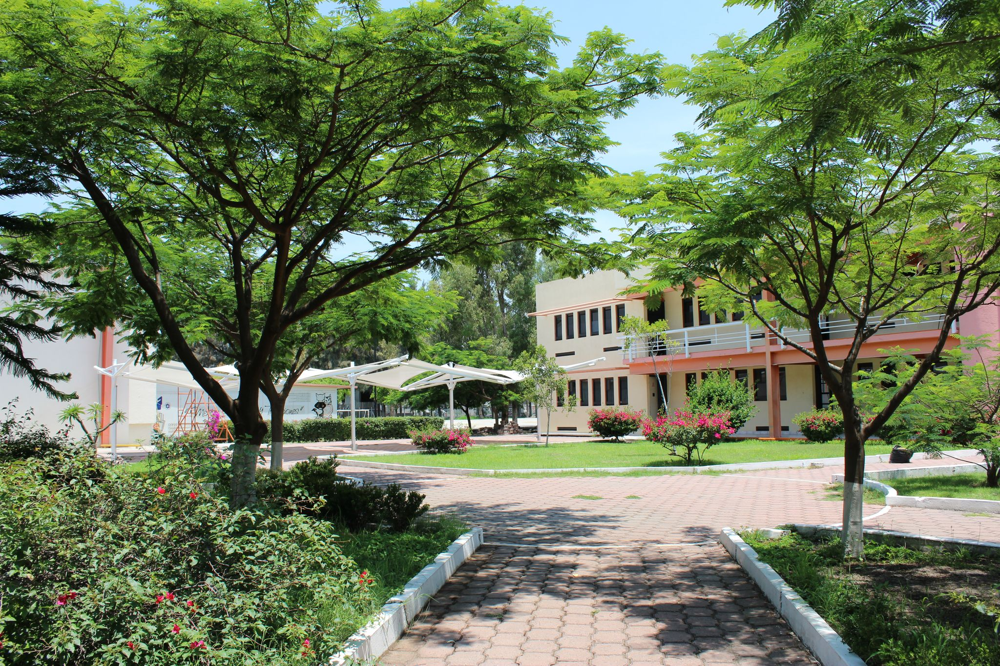

Primer objeto
Apenas a unas semanas del regreso de clases por vacaciones de semana santa, nos encontramos en el Tecnologico Nacional de Mexico, campus Queretaro sin algun estudiante, esto debido a la pandemia que surgio a inicios del año 2020 en el continente asiatico dentro del pais de China.
La institucion adopto ordenes de los altos mandos y se mantuvo la educacion en linea. Ejercicio de la pagina 226
